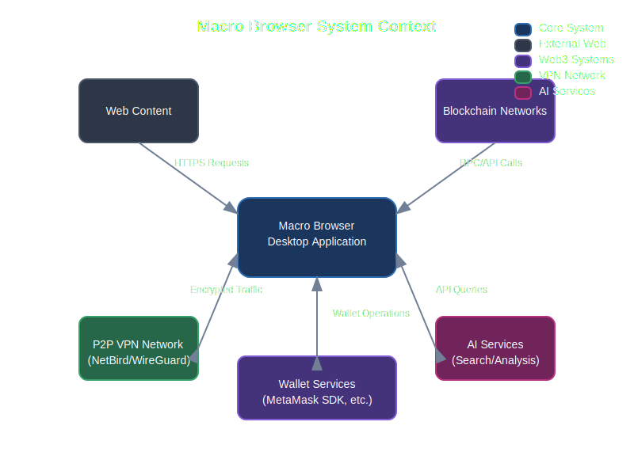

Technical Architecture
This section provides a detailed overview of Macro Browser's technical architecture and design decisions.
System Overview
Macro Browser combines traditional web browsing with next-generation privacy and Web3 capabilities.

The diagram above illustrates the high-level architecture of Macro Browser, with core components organized in layers.
System Context
Macro Browser interacts with multiple external systems to provide its functionality:

This context diagram shows how Macro Browser connects to the web, blockchain networks, P2P VPN infrastructure, wallet services, and AI systems.
Core Components
Macro Browser consists of several core components working together:
- Browser Engine: Built on Electron/Chromium for cross-platform compatibility
- Privacy Layer: Ad blocking, tracker prevention, and fingerprint protection
- P2P VPN: Secure, decentralized network connectivity
- Web3 Bridge: Connection to blockchain networks and dApps
- Wallet Integration: Secure crypto wallet capabilities
- AI Assistant: Intelligent browsing assistance
Technical Documentation
For more detailed technical information, please explore the following sections:
- Browser Engine
- Privacy Features
- P2P VPN Architecture
- Web3 Integration
- Wallet Architecture
- AI Systems
- Security Model
Technology Stack
Macro Browser is built using the following core technologies:
- Electron: Cross-platform framework that enables using web technologies to build desktop applications
- Chromium: Open-source browser project that powers Macro Browser's rendering engine
- TypeScript/JavaScript: Primary programming languages for application logic
- React: UI library for building the browser's interface components
- OpenAI API: Powers the intelligent search capabilities
- MetaMask SDK: Enables wallet connectivity and Web3 functionality
- WireGuard/NetBird: Underlying technology for the P2P VPN feature
Core Architectural Principles
- Security by Design: Security considerations are built into every component from the ground up
- Privacy First: All features prioritize user privacy and data minimization
- Modular Components: Clean separation of concerns allows for independent evolution of features
- Zero Trust: No component inherently trusts another without verification
- Graceful Degradation: Core functionality remains available even if enhanced features are disabled
System Process Architecture
The browser operates as a desktop application with several processes:
- Main Process: Manages application lifecycle and creates renderer processes
- Renderer Processes: Handle the display of web content in browser windows
- GPU Process: Handles GPU acceleration for rendering
- Network Service: Manages network requests and the VPN connection
- Utility Processes: Handle various tasks like extension execution